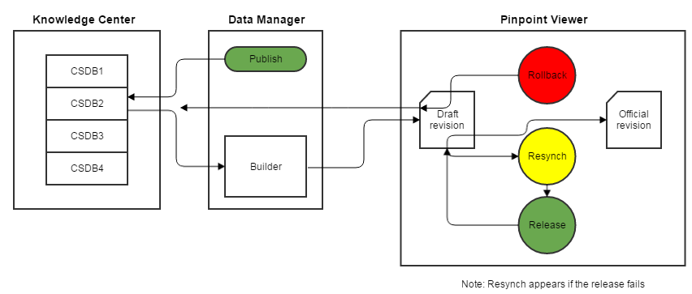

Processus général
Non applicable pour Pinpoint Standalone Light.
Lorsqu'un builder connecté au Knowledge Center S, par exemple l'A350 Builder, est sélectionné dans la fenêtre Publish Publication dans le Data Manager, l'utilisateur pourra sélectionner un CSDB de Knowledge Center à partir duquel publier et le type de publication à publier. La publication sélectionnée est ensuite récupérée directement de Knowledge Center S, les données sont converties à partir de XML vers Pinpoint Neutral, et il devient disponible en tant que projet dans le Pinpoint Viewer. La durée de ce processus dépend de la taille de la publication.
Les utilisateurs disposant des privilèges appropriés ont accès à la révision de la publication. Ils peuvent soit choisir de publier la révision sur un ensemble de groupes d'utilisateurs (Pinpoint viewers), ou ils peuvent rejeter, qui est, la rejeter et de supprimer la révision des groupes Pinpoint et du gestionnaire de données. Une autre option consiste à recharger la révision, ce qui supprime la révision et l'importe à nouveau à partir du gestionnaire de données.

Knowledge Center S Publish/Release Process
Privilèges connexes
- : Cette ressource est utilisée par l'utilisateur de l'application Pinpoint pour télécharger des publications de Data Manager Data Manager (en utilisant par exemple l'A350 builder) à Pinpoint. Vous aurez besoin d'autorisations "Lecture" à cette ressource pour pouvoir télécharger les projets de révision.
- : Le groupe d'utilisateurs qui doit être en mesure de Approuver et de Rejeter les révisions de publication dans Pinpoint doit avoir l'autorisation de lecture sur cette ressource pour pouvoir voir et utiliser les boutons de retour / relâchement / rechargement. Les utilisateurs qui n'ont pas ce privilège ne pourront pas voir les révisions de brouillon dans Pinpoint, ils ne verront seulement les révisions les plus récentes.
- : Le groupe d'utilisateurs pouvant libérer, annuler et recharger des révisions de publication dans Pinpoint doit disposer de l'autorisation Lecture / Écriture / Suppression pour la révision de publication afin d'effectuer la libération / l'annulation / le rechargement.
Publication à partir du Data Manager
La publication du Knowledge Center S à Pinpoint Viewer est lancée dans la Data Manager en créant une librarie de référentiels, une publication et en sélectionnant la CSDB et le type de publication appropriés. Pour plus d'instructions sur la publication, merci de référer à la section "Create/Publish Publication" dans le Flatirons Data Manager User Guide.
Tant que la dernière révision de publication est en état de brouillon, vous ne
serez pas autorisé à ajouter une nouvelle révision à partir de Data Manager. (Le bouton
 Ajouter une nouvelle révision sera désactivé.) Lorsque la publication est publiée dans
Pinpoint Viewer, vous verrez une coche dans le champ Approuvé.
Ajouter une nouvelle révision sera désactivé.) Lorsque la publication est publiée dans
Pinpoint Viewer, vous verrez une coche dans le champ Approuvé.
Si la
publication échoue quelconque, les boutons Log and Resynch sont disponible sous le bouton
Opérations de publication  dans
la barre d'en-tête Pinpoint. Ceux-ci permettent à l'utilisateur d'étudier le problème et de
réessayer l'opération. En outre, Data Manager tentera d'envoyer un courrier électronique sur
l'échec de la publication à un ensemble d'utilisateurs prédéfinis.
dans
la barre d'en-tête Pinpoint. Ceux-ci permettent à l'utilisateur d'étudier le problème et de
réessayer l'opération. En outre, Data Manager tentera d'envoyer un courrier électronique sur
l'échec de la publication à un ensemble d'utilisateurs prédéfinis.
Il y a une description de la configuration de la notification par e-mail dans le Data Manager (document PDF fourni avec l'application). Si ce n'est pas configuré correctement ou si le serveur de courrier n'est pas en cours d'exécution / accessible, le message d'avertissement suivant s'affichera lorsque le Data Manager tente d'envoyer une notification d'échec:
Le serveur de courrier n'est pas disponible ou n'est pas configuré correctement
La notification par e-mail contient des informations qui identifie la publication, résume le problème et fournit des conseils de dépannage, comme le montre dans l'exemple ci-dessous:
Release, Rollback, and Reload in Pinpoint Viewer
Lorsque vous publiez une publication dans Data Manager, celle-ci peut être publiée en tant
que brouillon ou automatiquement en cochant la case Libération
automatique. Si la publication a été automatiquement publiée et que la
publication a réussi, l'icône  Opérations de publication n'est pas visible dans Pinpoint Viewer.
Opérations de publication n'est pas visible dans Pinpoint Viewer.
Seuls les utilisateurs disposant des autorisations appropriées peuvent afficher la
publication et effectuer la publication, la restauration ou le rechargement sur le projet de
révision de publication à l’aide des fonctions suivantes sous c  Opérations de publication dans la barre d’en-tête:
Opérations de publication dans la barre d’en-tête:
 Approuver – Lorsqu'elle est appuyé, une nouvelle boîte de
dialogue avec les groupes d'utilisateurs apparaît. Les groupes choisis dans cette boîte
de dialogue auront accès à la version publiée. Referer-vous à Publier une révision de publication pour plus d'informations.
Approuver – Lorsqu'elle est appuyé, une nouvelle boîte de
dialogue avec les groupes d'utilisateurs apparaît. Les groupes choisis dans cette boîte
de dialogue auront accès à la version publiée. Referer-vous à Publier une révision de publication pour plus d'informations.- Rejeter – Lorsque vous appuyez sur, la révision de la publication est supprimée de Pinpoint Viewer et la Data Manager. La ressource de révision de publication est également supprimée de l'arborescence de privilèges dans le module Access Control. Referer-vous à Annulation d'une révision de Publication pour plus d'informations.
 Recharger – Lorsque vous appuyez sur cette touche, la révision de
publication sélectionnée est supprimée et la révision est réimportée à partir du
Gestionnaire de données. Referer-vous à Recharger une révision de publication pour plus d'informations.Remarque : Il se peut que le délai de rechargement avant 60 secondes soit atteint l'importation de la vision commence.
Recharger – Lorsque vous appuyez sur cette touche, la révision de
publication sélectionnée est supprimée et la révision est réimportée à partir du
Gestionnaire de données. Referer-vous à Recharger une révision de publication pour plus d'informations.Remarque : Il se peut que le délai de rechargement avant 60 secondes soit atteint l'importation de la vision commence.